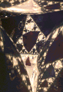
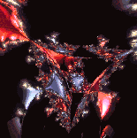
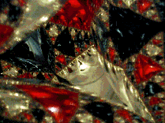

Julia Sets and the Mandelbrot Set
Optical Basin Boundaries
These mages were taken from David Sweet's website
http://www.chaos.umd.edu/~dsweet/Spheres/
. Click each picture for a magnification in a new window.



Return to
Optical Basin Boundaries
.